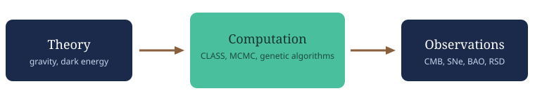

Tensions and theory
Fundamental physics
- Teleparallel gravity and f(T) models
- Gravity beyond General Relativity
- Dark energy and late-time acceleration
- Hubble tension and related cosmological tensions
- Alternatives to ΛCDM
I connect theory to observations with computation in the middle. Three strands run through everything I do: the physics of gravity and cosmological tensions, the numerical machinery that makes those theories predictive, and the statistical methods that turn data into constraints.

Tensions and theory
Numerical pipelines
From data to constraints
Tensions and theory
I work on gravity beyond General Relativity, especially teleparallel gravity and f(T) models, as a possible description of late-time acceleration. A central question is whether cosmological tensions — above all the Hubble tension — are a hint of new physics. That programme now includes CMB comparisons with Planck, SPT, and ACT as well as late-time probes.
Numerical pipelines
I build the numerical path from a theory to a prediction: modifying CLASS so f(T) can be run as a full Boltzmann solver, and developing genetic-algorithm pipelines, coupled to MCMC, that search a wide space of cosmological models instead of assuming one formula from the start.
From data to constraints
I constrain parameters with MCMC, compare models with information criteria such as AIC and BIC, and reconstruct cosmological functions with Gaussian processes. Statistics is how a theory becomes a statement we can test against surveys.